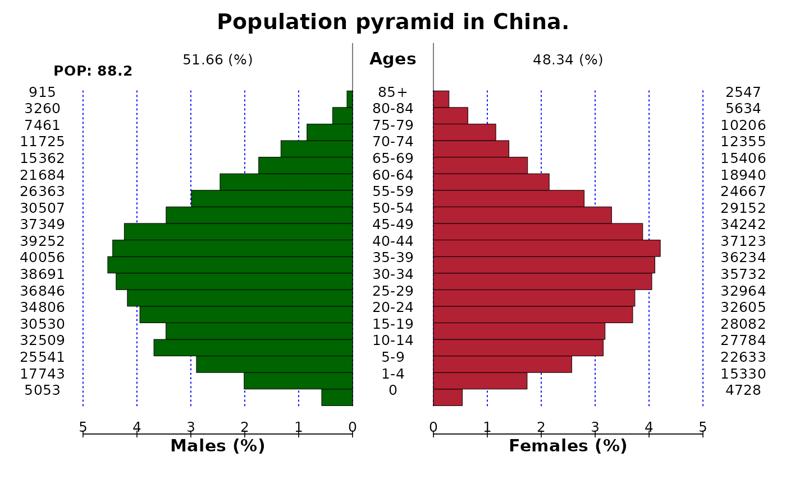

Plot population pyramid
pyramid.RdPlot population pyramid
Arguments
- data
A data.frame including left pyramid numbers in the 1st column and and right pyramid numbers in the 2nd column, where the numbers of males in each age-class are usually given to left numbers and those of females are to right numbers. If the data.frame includes 3rd column, it is used as age-class labels, otherwise the row.names(data) is used as age-class labels.
- show_value
Logical value to draw the population numbers. Default is TRUE.
- show_prop
Logical value to draw the pyramid using proportion. Default is TRUE.
- left_axis
A vector of axis for left pyramid. If missing, automatically given using pretty().
- right_axis
A vector of axis for right pyramid. If missing, left_axis is used.
- axis_fm
A format code of formatC for plotting axis. If missing, "g" is used.
- axis_bm
A big.mark of formatC for plotting axis. If missing, none.
- axis_bi
A big.interval number of formatC for plotting axis. Default is 3.
- cgap
The width of center gap (as ratio to each panel) to draw age-class. Default is 0.3.
- cstep
The interval to write the labels of age classes. Default is 1.
- csize
The font size factor to write the labels of age classes. Default is 1.
- labs
The label of the left, center, and right pyramid. Default is c("Males", "Ages", "Females").
- gl
Logical value to draw the vertical dotted lines. Default is TRUE.
- cadj
The vertical adjustment factor for the labels of age classes. Default is -0.03.
- cols
The color of the left and right pyramid. Default is c("lightblue", "pink").
- dens
The density of hatching lines (/inch) for left and right pyramid. Default is c(-1, -1), when the pyramid will be filled.
- main
The main title of the pyramid.
- ...
Other options.
Examples
left <- c(
5053, 17743, 25541, 32509, 30530, 34806, 36846, 38691, 40056,
39252, 37349, 30507, 26363, 21684, 15362, 11725, 7461, 3260, 915
)
right <- c(
4728, 15330, 22633, 27784, 28082, 32605, 32964, 35732, 36234,
37123, 34242, 29152, 24667, 18940, 15406, 12355, 10206, 5634,
2547
)
agegrp <- c(
"0", "1-4", "5-9", "10-14", "15-19", "20-24", "25-29", "30-34",
"35-39", "40-44", "45-49", "50-54", "55-59", "60-64", "65-69",
"70-74", "75-79", "80-84", "85+"
)
pop <- data.frame(left = left, right = right, row.names = agegrp)
pyramid(pop, main = "Population pyramid in China.", csize = 0.8)
